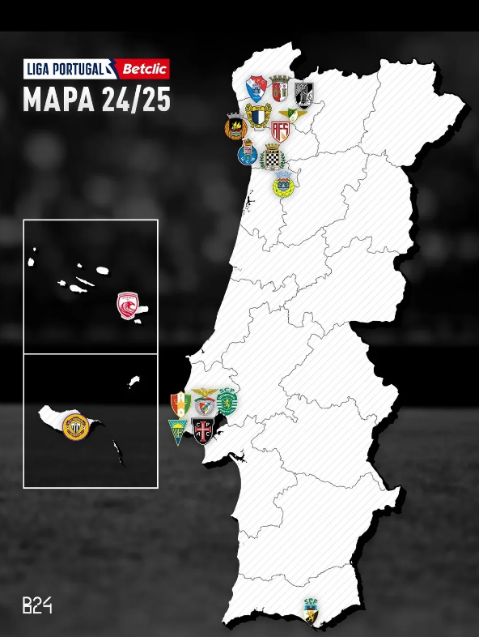

Bem-vindos ao guia da Liga Portugal! Clique no nome da equipe para conhecer um pouco mais sobre ela!
Bem-vindos ao guia da Liga Portugal!
Clique no nome da equipe para conhecer um pouco mais sobre ela!
Já foram disputadas 91 edições do Campeonato Português, sendo o Benfica o maior campeão, com 38 títulos.
O atual campeão é o Sporting Clube de Portugal, que ganhou seu troféu de número 20 na temporada 2023/24.
Além dos três grandes (SLB, FCP e SCP), apenas Boavista e Belenenses possuem títulos, com uma conquista para cada.
O maior estádio do campeonato é o Estádio da Luz, do Benfica, que possui capacidade para 64.642 espectadores.
A edição atual começa no dia 9 de agosto de 2024, com a partida entre Sporting x Rio Ave, em Lisboa.
A equipe mais nova desta temporada é o AVS Futebol SAD, fundado em 5 de maio de 2023, há pouco mais de um ano.